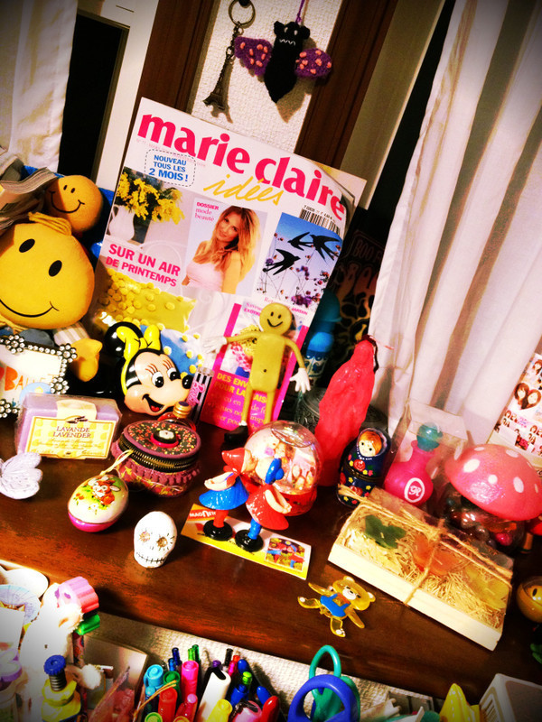

| 2011/12 08 Thu | 21回目*marika |
こんばんわ＊
いつも読んでくださる方、
初めて読んでくださった方、
コメントしてくださった方、
ありがとうございます^^*
最近貧血によくなるベビたんですです。
(鉄分足りないみたいなのでプルーン食べます)
そういえば...!!
もう20回も更新したとは!!!!!
はやいはやい
みなさん!
沢山のリクエストありがとうございました♡
お団子←めんどくさくないですよ♪
ハーフアップツイン
巻きサイド縛り
ツノヘア←興味ある----!!!
猫耳ヘア←自分でできないけどやってみたい♡
サイドポニー
ポニーテール
お団子とハーフアップツインの
リクエストが多かったので
機会があれば順番に載せますね☆*!!
ヘアアレンジって楽しいのよ-♪
普段はいっつもダウンだけどね笑
..................................
＊質問返します!
・クリスマス何がほしいの？
何かな~...
みなさんにイベントで会えるだけで
じゅうぶんうれしいので♡!!
でも物だったら.....
おしゃれなスノードームとかほしいかも←
最近集めてるんです^^
・誕生日何がほしいの？
雑貨とかお洋服かな!
・おしゃれはどこで学ぶの？
いろんな本や雑誌を読んで
おしゃれ研究してるよ~♡
服に興味もったきっかけはママ!
・前の記事の写真は何ラーメン？
ねねころはみそラーメン*!!
私は野菜ラーメンです*!!
違うの頼んだけど
塩ラーメンにお酢をかけるのおすすめです!
・どうぶつの森やってたならキャラで
もさきちって言うウサギいたの知ってる？
知ってます知ってます!!
きのこ村に住んでましたよ~笑*
・乃木坂で他メンにこれだけは負けないものって何？
変顔のレパートリーの多さです笑←
・バレエは何年やってたの？
今でも踊りたい？
どんな役やってたの？
バレエは4歳から習ってたから
約11年です。
今でも踊りたいですよ---!!
自然と踊っちゃう!
最後にやったのは
ドンキホーテのキューピットです♡
楽しかったなぁ***
・モーターショー出演する？
握手会で参加します＊
ゲーム選抜外れました~泣
せいらりんと対決したけど
すぐ抜かされた笑
そりゃそーだ!!←開き直り
以上＊
..................................
今日は私服載せちゃいますぞぃ:D
じゃん!

かーわいーだろー
このニット*
ママのおさがりのsunaokuwaharaのもの!
自分じゃぁ手出せないブランド!きゃ-
このヘルメットみたいな形の帽子もすき♡
帽子だいすき---
あともういっこしゃしん載せます。
私のすきなものがすぐ分かるしゃしん＊

にぎやかな私のお部屋*(の一部）
ただかわいく撮れたから
載せたかったの←ぇー
うん、ただそれだけっさ=3へっへ
はい!
自分の体調しっっっかり整えます!!
みなさんやスタッフさんに心配かけないように=3
鉄分とらなきゃ---!
みなさんも寒いからあったかくして寝ましょう*
うん。そうしましょう!
明日も一緒に頑張ろう***
今日は早く寝ます。
明日に向けて、おやすみなさい＊
cHU

LOVE
ベビたん*****bA by marika